概述 — Hello World 调试入门
#include <windows.h>
int wWinMain(HINSTANCE hinstance, HINSTANCE hPrevInstance,
PWSTR pCmdLine, int nCmdShow) {
MessageBox(NULL, L"hello", L"hello word",
MB_ICONINFORMATION | MB_CANCELTRYCONTINUE);
return 0;
}使用 X64dbg 打开程序，找到 helloword 字符串所在内存地址，修改字符串内容，按下 F9 继续执行查看修改结果。
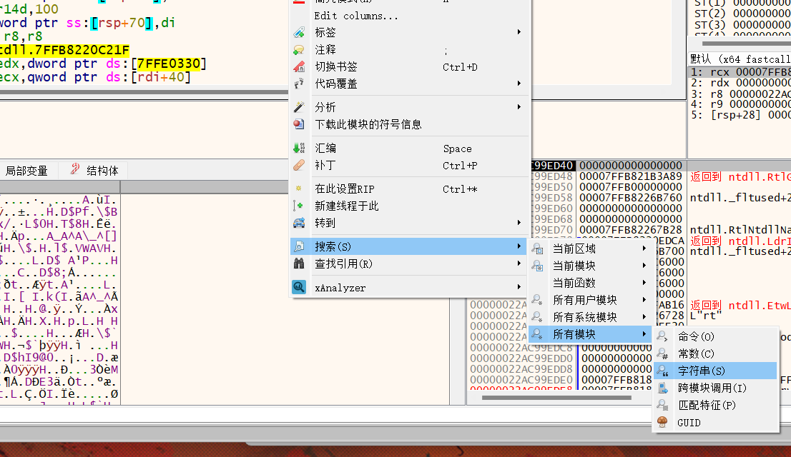
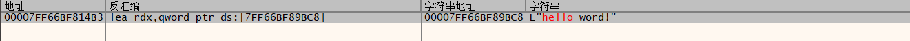
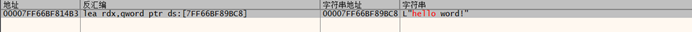
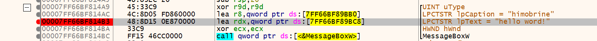
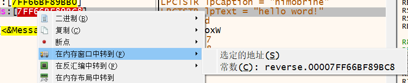
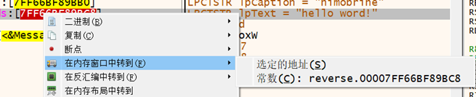
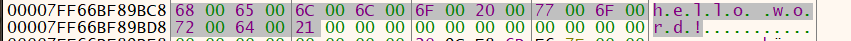
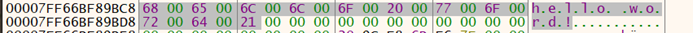
转内存地址 7FF66BF89BC8 定位到字符串位置。
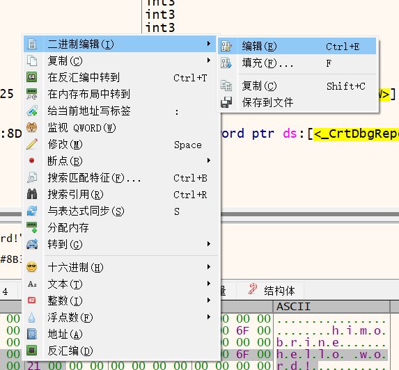
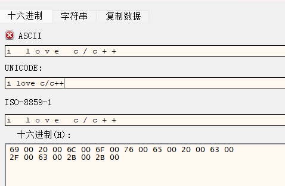
修改字符串内容后继续执行。
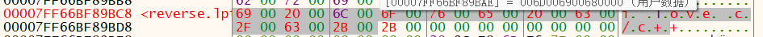
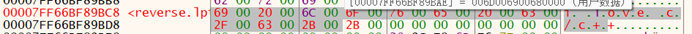
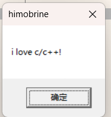
X64dbg 快捷键大全
调试控制
F2 : 开始/停止调试
F3 : 单步执行
F7 : 进入函数调用
F8 : 跳过函数调用
F9 : 继续执行
F12 : 暂停/继续执行断点操作
F5 : 添加/删除断点
Ctrl+F5 : 添加/删除硬件断点
F6 : 添加/删除条件断点
F9 : 启用/禁用断点
Ctrl+F9 : 启用/禁用所有断点寄存器
Ctrl+R : 打开/关闭寄存器窗口
Ctrl+G : 跳转到指定地址
F2/F4/F6 : 在寄存器窗口中修改寄存器的值内存
Ctrl+M : 打开/关闭内存窗口
Ctrl+E : 打开/关闭表达式窗口
Ctrl+F : 查找指定字节序列
Ctrl+Shift+F : 查找指定指令序列
Ctrl+D : 将内存中的数据以十六进制形式导出到文件中动态分析
Ctrl+A : 打开/关闭汇编窗口
Ctrl+B : 打开/关闭堆栈窗口
Ctrl+C : 打开/关闭 CPU 窗口
Ctrl+L : 打开/关闭日志窗口其他
Ctrl+F2 : 打开/关闭工具栏
Ctrl+F10 : 打开/关闭菜单栏
Ctrl+Q : 退出 X64dbgX64dbg 深入操作
图形化断点管理、追踪断点、备注区以及 X64dbg 自带的反汇编功能。
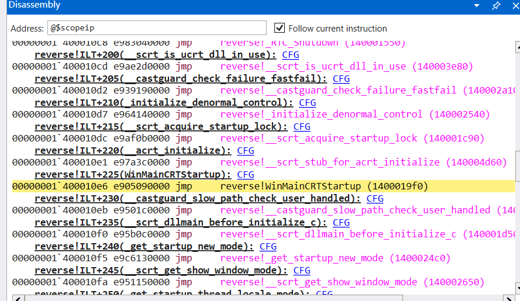
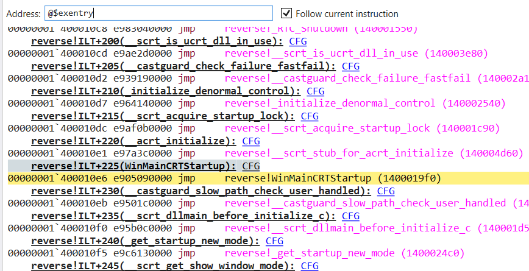
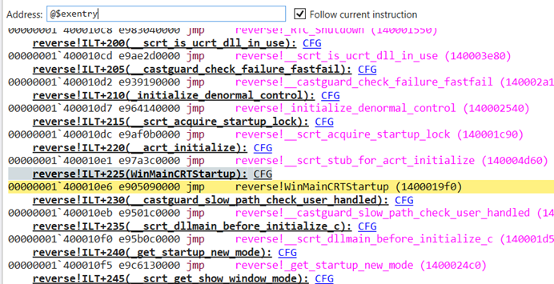
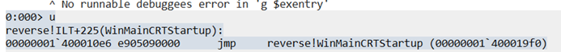
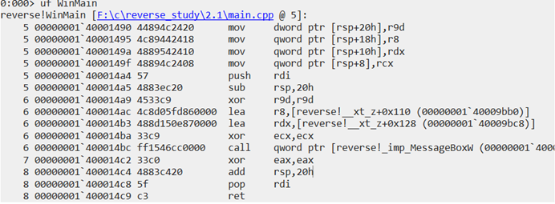
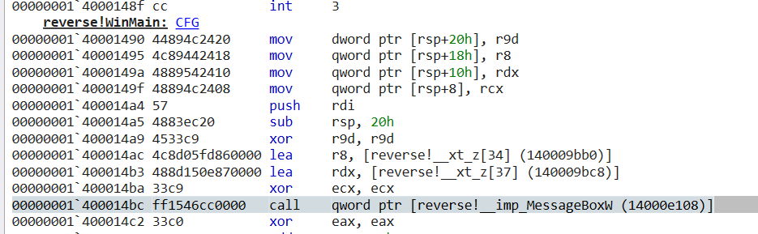
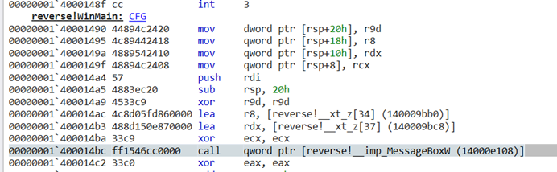
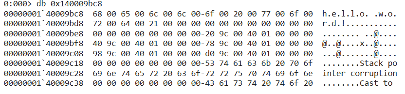
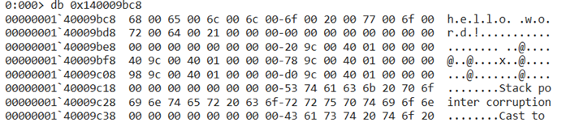
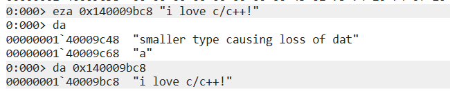
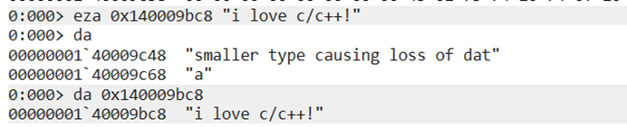
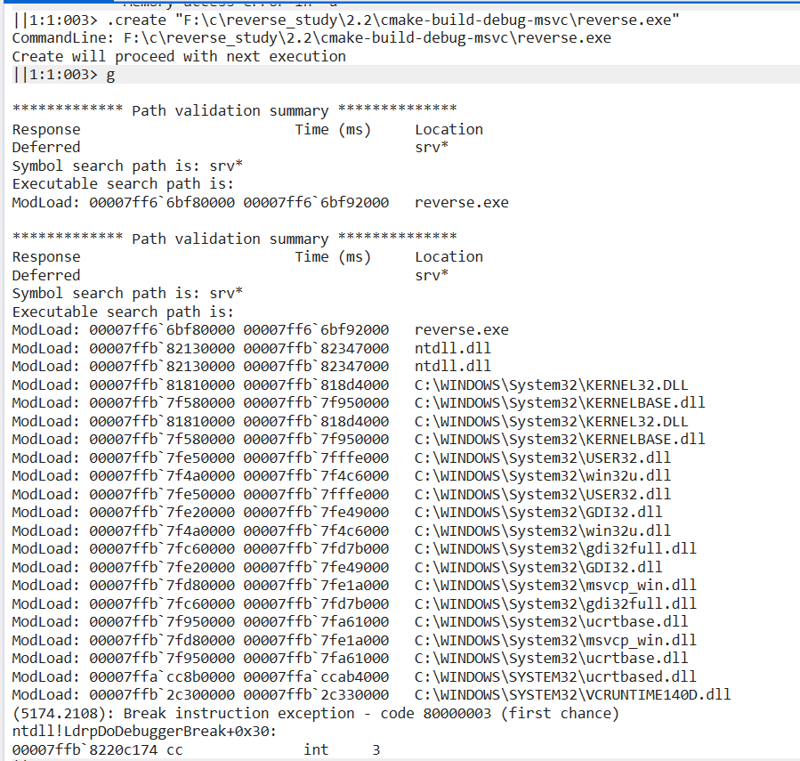
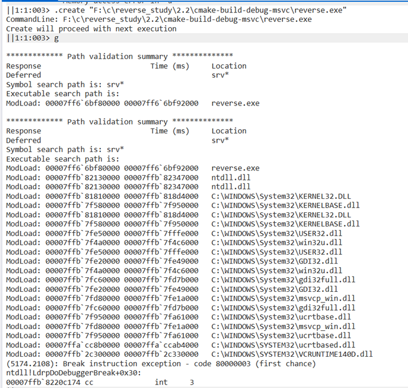
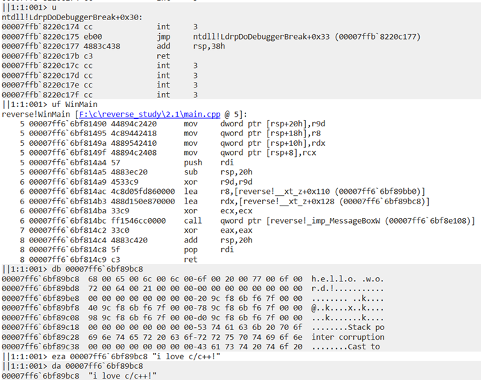
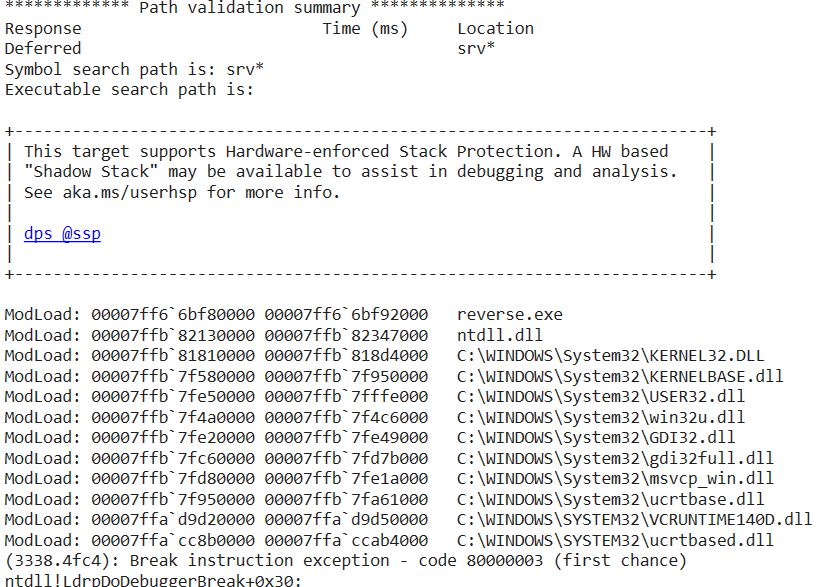
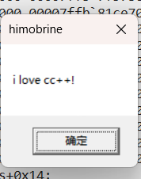
Windbg 操作入门
使用 Windbg 打开程序，输入 u 显示反汇编代码。@$exentry 是执行入口代码（默认入口）。
使用 uf WinMain 反汇编 WinMain 函数（如果发现 disassembly 不正确，说明符号未加载）。
找到 helloword 字符串地址后，可用 eza 命令修改内存数据：
eza 0x140009bc8 "i love c/c++!"修改后继续运行即可看到效果。注意操作前需用 .create 等命令初始化调试环境。
Windbg 快捷键参考：Microsoft 官方文档
Windbg 命令速查
流程控制
g // Go — 让程序跑起来
p // 单步步进 (F10)
p 2 // 单步步进 2 次
pa 0x7c801b0b // 单步执行到指定地址停下
pc // 单步执行到下一个函数调用处停下
q // 结束调试会话（结束进程，不退出 windbg）
qd // 脱离调试会话（不结束进程，不退出 windbg）
.restart // 重启目标进程
.reboot // 重启调试系统（内核调试中使用）内存读写
db / dw / dd / dq // 按 1/2/4/8 字节显示
da / du // 按 ASCII / UNICODE 字符显示
df / dD // 按单精度/双精度浮点数显示
eb / ew / ed / eq // 按 1/2/4/8 字节写入
ea / eu // 按 ASCII / UNICODE 写入（不自动补 '\0'）
ef / eD // 按单精度/双精度浮点数写入
eza / ezu // 按 ASCII / UNICODE 写入（自动补 '\0'）
dds / dqs // 按双字/四字显示内存并解析符号
dt _eprocess // 查看结构体成员
dt _eprocess 0x510 // 从指定地址解析结构体
dt ntdll!_peb* // 通配符搜索类型
r // 显示所有寄存器
r eax, gdtr // 显示指定寄存器
r eax=5, edx=6 // 修改寄存器值
!pte 0x80b99000 // 查看页表/页目录信息
!vtop 33a3f000 0x80b99000 // 指定页目录基址查看内存搜索
s -b addr L100 cc c2 // 搜索字节序列
s -b addr L-100 cc c2 // 向前搜索
s -d addr L100 'H' // 按双字搜索 ASCII
s -a addr L100 "ntdll" // 搜索 ASCII 字符串硬件断点 (ba) — break on access
ba r4 0x00401200 // 对指定地址 4 字节读写时断下
ba w4 0x00401200 // 对指定地址 4 字节写入时断下
ba e 0x00401000 // 执行时断下
ba i4 0x3f8 // I/O 端口访问时断下（内核模式）
参数说明: e(执行) r(读/写) w(写) i(I/O)软件断点 (bp, bu, bm)
bp main // 在 main 函数开头设断
bp 0x7c801b00 // 在指定地址设断
bp /p EProcess // 对指定进程设断（内核模式）
bu 0x7c801b00 // 设置未解析断点（延迟激活）
bl // 列出所有断点
bc * // 清除所有断点
be * // 启用所有断点
bd * // 禁用所有断点
bc 1 2 5 // 清除指定编号断点反汇编
u // 反汇编 eip 后 8 条指令
u main.exe+0x10 L20 // 指定地址后 20 条指令
ub 000c135d L20 // 查看指定地址前 20 条指令
uf NtOpenProcess // 反汇编整个函数
uf demo::add // 反汇编类成员函数堆栈回溯
k // 显示当前调用堆栈
kn // 带栈编号显示
kb // 显示前 3 个函数参数
kb 5 // 只显示最上 5 层
kv // 增加调用约定/FPO 信息
kp // 显示完整参数信息
kd // 打印堆栈地址
.frame // 显示当前栈帧
.frame /r n // 显示指定栈帧及寄存器
dv // 显示当前栈帧的参数和局部变量进程与线程
!process -1 0 // 查看当前进程信息
!process 0n<PID> 0 // 获取指定 PID 的进程信息
!process 0 0 <进程名> // 按进程名查找
!peb // 显示当前进程 PEB
!peb 7ffdf000 // 显示指定 PEB
.process /p /r <eprocess> // 切换到目标进程上下文
.thread // 显示当前线程 ETHREAD
.thread 84018d78 // 切换到指定线程模块与符号
lm // 列出所有模块符号信息
ld kernel32 // 加载 kernel32.dll 符号
.sympath SRV*C:\dbg\sym*http://msdl.microsoft.com/download/symbols // 设置符号路径
.sympath + c:\symbols // 追加符号路径
.reload /f kernel32.dll // 强制加载符号
.reload /f /v // 强制加载 + 详细输出
x nt!Dbg* // 查看 nt 模块中以 Dbg 开头的函数其他常用命令
!handle 0 // 列出当前进程所有句柄
!handle 0 6 Mutant // 只显示互斥类型对象
!object <addr> // 查看对象类型
ln eip // 列出与 eip 最近的符号
!address 0013073c // 显示指定地址内存信息
.formats 10 // 多格式显示表达式值
? 123 // 计算十进制
? 0x4d // 计算十六进制
!idt -a // 列出 IDT 所有项
!pcr // 获取当前 CPU 的 KPCR
!dpcs // 获取当前 CPU 的 DPC 队列
!apc // 显示所有 APCOllyDbg
智能搜索找到 "hello world" 字符串并跳转至目标地址进行修改。
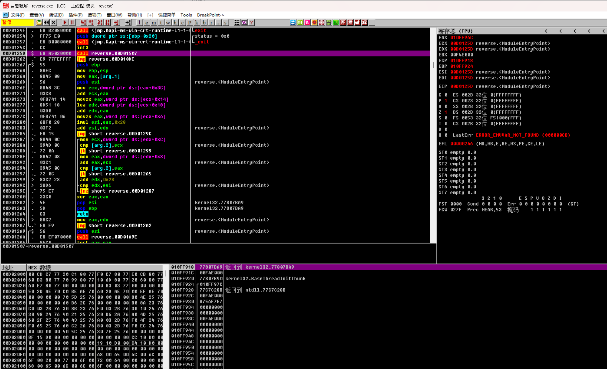
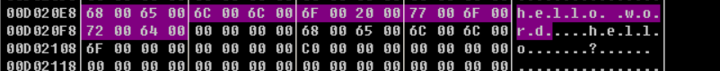
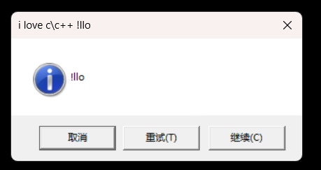
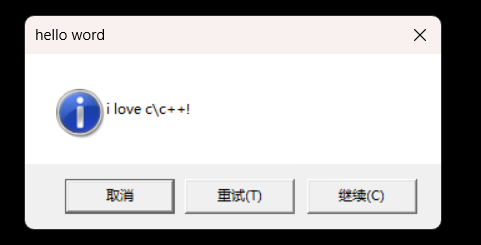
OllyDbg 快捷键
F2 : 设置 INT3 断点
Shift+F2 : 设置条件断点
F4 : 执行到所选行
F7 : 单步进入 (Step Into)
F8 : 单步跳过 (Step Over)
F9 : 继续执行
Ctrl+F9 : 执行到返回
Alt+F9 : 执行到用户代码
Ctrl+F2 : 重新运行
Ctrl+F11 : 跟踪进入
Ctrl+F12 : 跟踪跳过反汇编窗口快捷键
回车键 : 跟随跳转/调用到目标地址
退格键 : 移除自动分析信息
Ctrl+F1 : 打开 API 帮助
Ctrl+A : 分析当前模块代码
Ctrl+B : 开始二进制搜索
Ctrl+C : 复制到剪贴板
Ctrl+E : 二进制编辑
Ctrl+F : 命令搜索
Ctrl+G : 跳转到地址
Ctrl+J : 列出所有调用和跳转
Ctrl+K : 查看调用树
Ctrl+L : 搜索下一个
Ctrl+N : 打开名称标签列表
Ctrl+R : 搜索命令参考
Ctrl+S : 搜索汇编命令
空格 : 修改指令
冒号(:) : 添加标签
分号(;) : 添加注释
星号(*) : 转到 EIP
加号(+) : 前进到下一个命令历史
减号(-) : 后退到上一个命令历史命令行命令
CALC : 判断表达式
WATCH : 添加监视表达式
AT : 在指定地址反汇编
FOLLOW : 跟随命令
ORIG : 反汇编于 EIP
DUMP : 在指定地址转存
DA : 转存为反汇编代码
DB : 十六进制字节格式转存
DC : ASCII 格式转存
DD : 堆栈格式转存
DU : UNICODE 格式转存
DW : 十六进制字词格式转存
STK : 前往堆栈地址
AS : 在指定地址汇编
BP : 条件中断
BPX : 中断在所有 Call
BPD : 清除所有 Call 中断
BC : 清除断点
MR : 内存断点（访问时）
MW : 内存断点（写入时）
MD : 清除内存断点
HR : 硬件中断（访问时）
HW : 硬件中断（写入时）
HE : 硬件中断（执行时）
HD : 清除硬件断点
STOP : 停止执行
PAUSE : 暂停执行
RUN : 运行
GE : 运行并忽略例外
SI : 单步进入
SO : 单步跳过
TI : 跟踪进入直到地址
TO : 跟踪跳过直到地址
TC : 跟踪进入直到满足条件
TOC : 跟踪跳过直到满足条件
TR : 运行直到返回
TU : 运行直到用户代码
LOG : 查看记录窗口
MOD : 查看模块窗口
MEM : 查看内存窗口
CPU : 查看 CPU 窗口
CS : 查看调用堆栈
BRK : 查看断点窗口
OPT : 打开选项设置
EXIT/QUIT: 退出 OllyDbg
OPEN : 打开可执行文件
CLOSE : 关闭可执行文件
RST : 重新运行
HELP : 查看 API 函数帮助